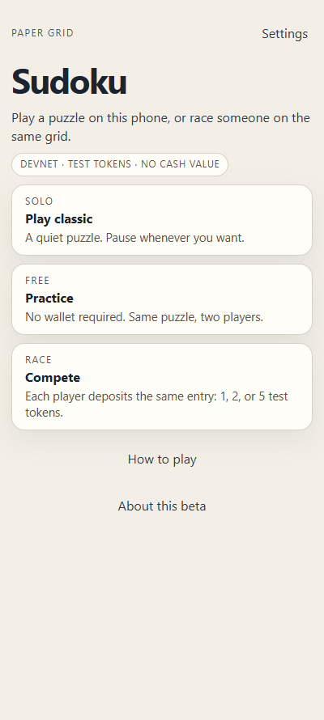
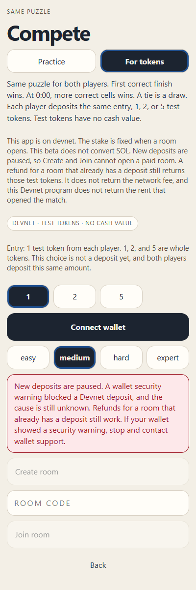
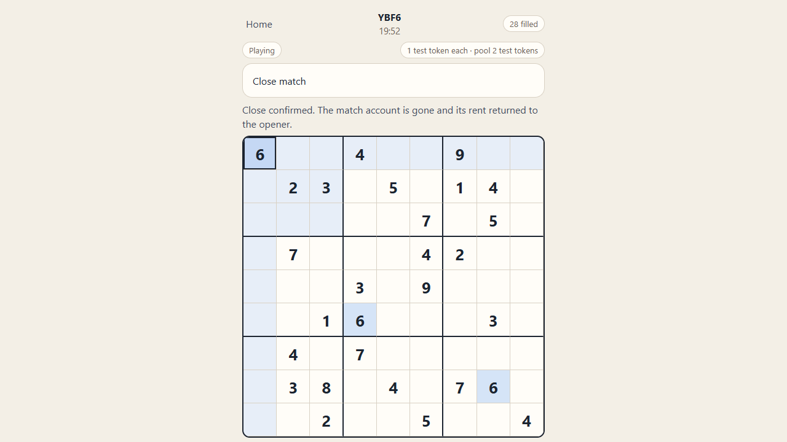

Solana Mobile · CLOCK IN
A two-player race on one puzzle. The stake sits in a Solana vault that neither player can rewrite.
People already play Sudoku. A wager between two players usually means one of them holds the money. That fails with a stranger, on a phone, or when someone walks away.
Both players see the same givens. The first correct finish wins. At the clock, the fuller correct board wins. A tie splits the vault.
Classic is a solo puzzle. Practice is a free race. Neither asks for a wallet. Compete is the separate choice, and the screen says the tokens have no cash value.

Each player signs a deposit into a program account. The server can submit the result. It cannot change the mint, the stake, the players, or the deadlines after the room opens. Payouts go only to the two players.
The Android app is a Web Shell. It hands wallet requests to the Mobile Wallet Adapter. The app does not keep the key. A desktop browser can be the second player.
The public beta uses Devnet test tokens. A physical Seeker has opened the app, connected Seed Vault Wallet, and signed a message. A physical deposit was blocked by that wallet before any signature, with the warning “Scam site detected.” No deposit was broadcast. The cause of that warning is unknown. New deposits are paused in the public app until wallet support identifies the check. Refunds for a room that already has a deposit still work.
Earlier Devnet escrow tests, including a staging program, have completed a winner, a draw, an unmatched refund, a deadline refund, and close. Those runs are not the blocked physical deposit. The close screenshot is a real staging transaction, not a mock and not a physical Seeker deposit.


The Android APK loads the public site, so a later web deploy is what the installed app shows. Classic, Practice, and Settings have been used on a physical Seeker. Seed Vault Wallet has connected and signed a message there. A complete free Practice match was played by two clients on the public site: both received the same puzzle, one finish decided the race, and a refresh kept the result. Escrow, refund, and settlement have run in Devnet test environments other than the blocked physical deposit. DFlow can return a quote and an unsigned swap. None of this moves Mainnet value.
The physical Seeker deposit and refund are not verified. Seed Vault Wallet blocked the attempt. The latest Classic clock was checked in the browser, not on the phone, because the Seeker was not attached for that pass. The Mainnet financial program is not deployed. No Mainnet DFlow swap has been broadcast. Real-value staking is off. The app is not published on the Solana dApp Store. Card funding through MoonPay stays paused.
The production program is built to accept only Mainnet USDC. A player could deposit USDC, or swap SOL to USDC through DFlow and then deposit. That program is not deployed. No real swap has been sent. The production site refuses financial calls.
A missed opponent or an unfinished match refunds after the deadline. If a send is uncertain, the app looks up that signature instead of sending a second transaction. New paid rooms can be paused without freezing a refund of a room that is already open.
An outside solver can still be used. A fast finish is flagged for review and is not grounds to take the stake. A physical Seeker deposit has not succeeded. Test tokens are not money. The scam-site warning has not been classified as a false positive.
Public Devnet now. Then, only with the owner's approval: deploy the USDC program, one real swap, one real match, an external review, and a published fair-play rule before anyone can stake real value.